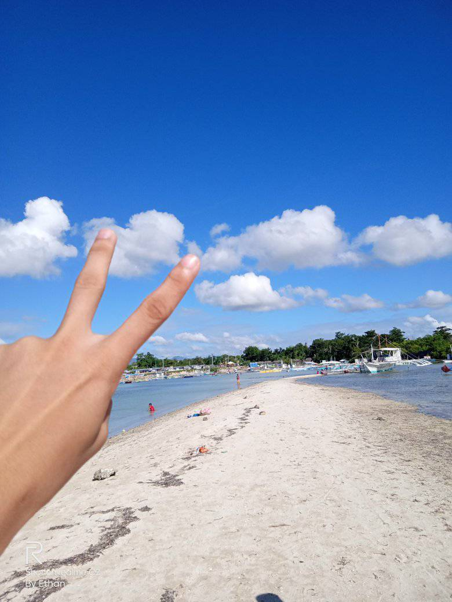

When you hear the word Cordova it is intertwined with seawater. At the tip of the island there is this white sand bar with pristine water during high tide. This made Cordova as top of Cebuano’s list.
During high tide the white sandbar will disappear as seawater would cover it. However, this is still safe to swim because water is only at your waistline when you are at the sandbar. Not to mention it gives a Maldives vibes. When it’s low tide. There is still swimmable area that is safe for kids too. Aside, people could do grilling on the sand and could even pitch their nets, tables, and chairs. You don’t even have to worry for foods as it is really near the Cordova public market. The area itself is very accessible as many motorkad drivers know where the place is.